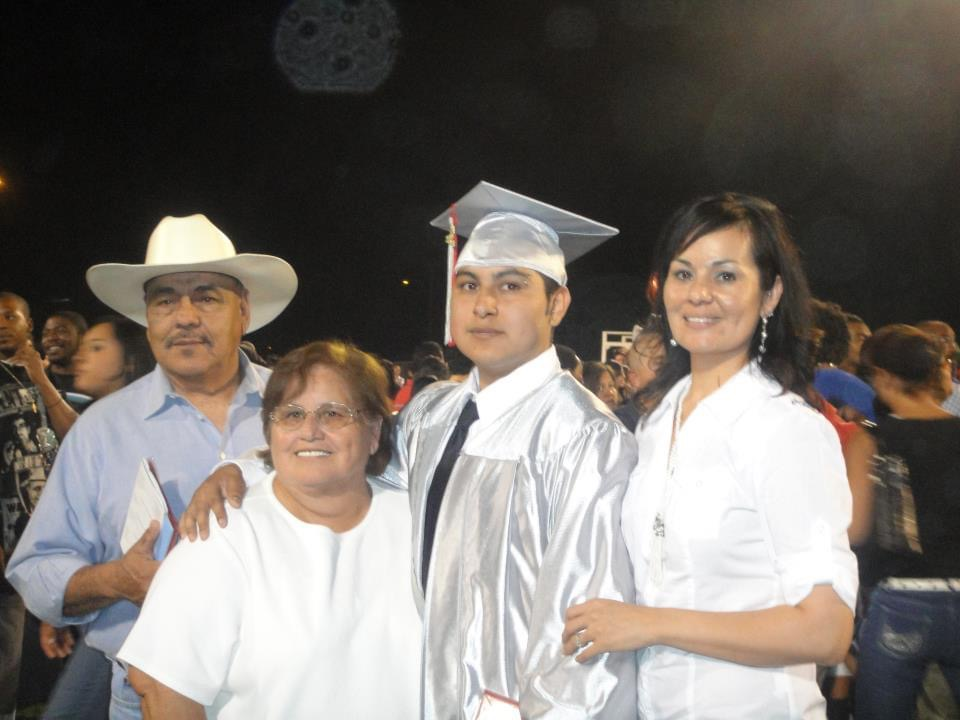
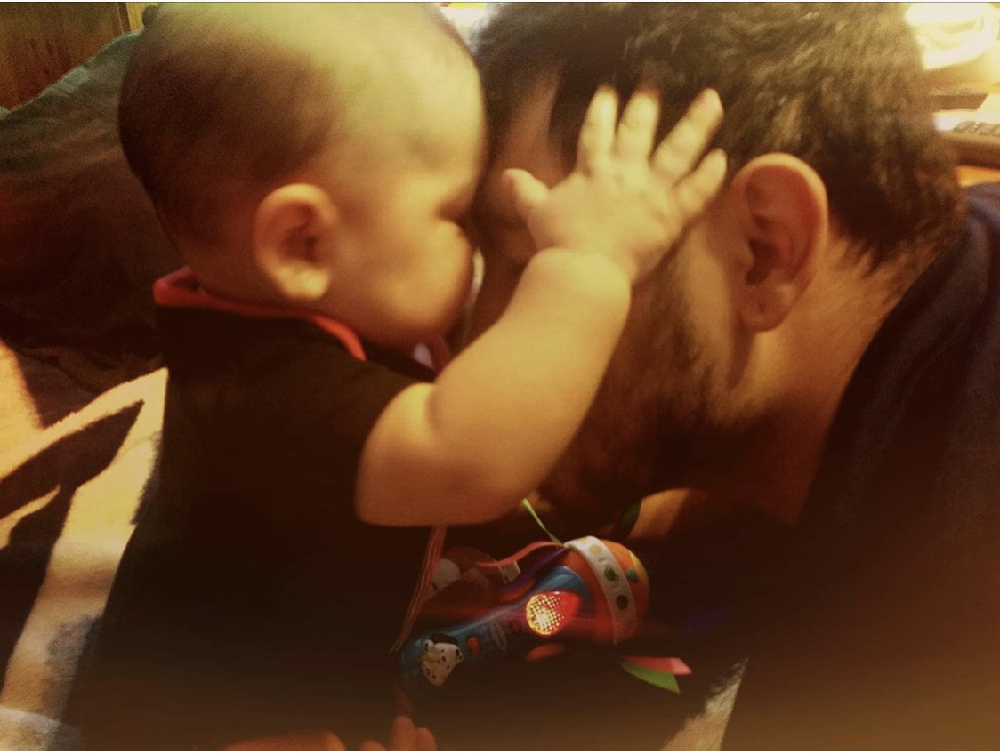
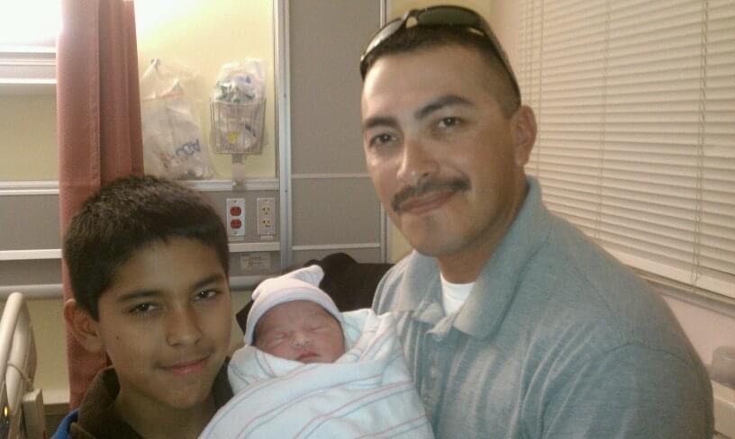
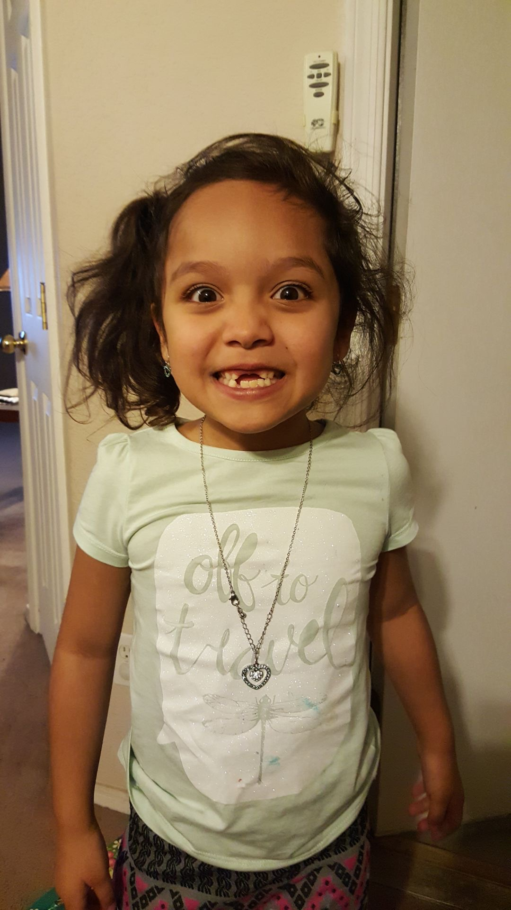
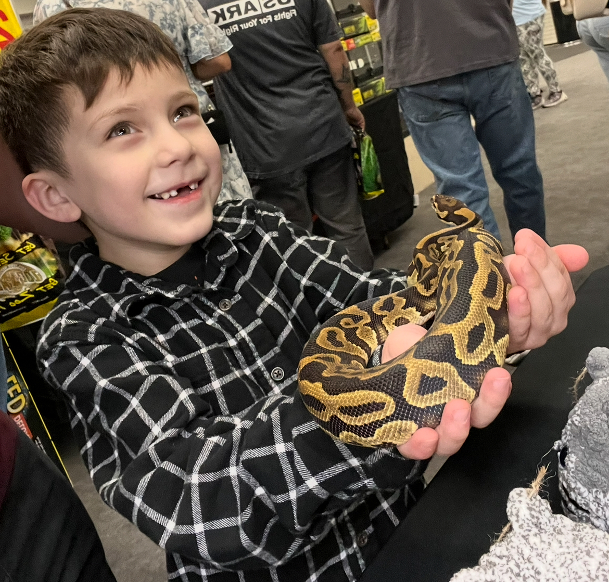
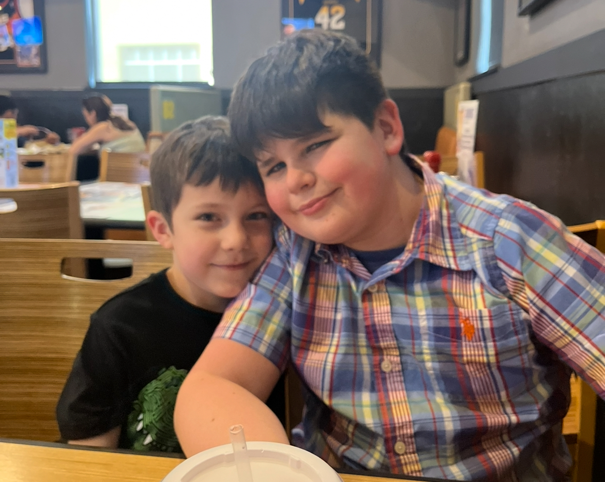
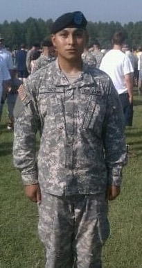
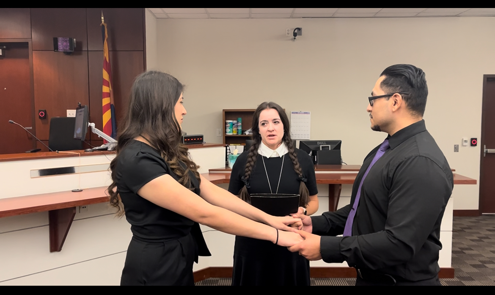
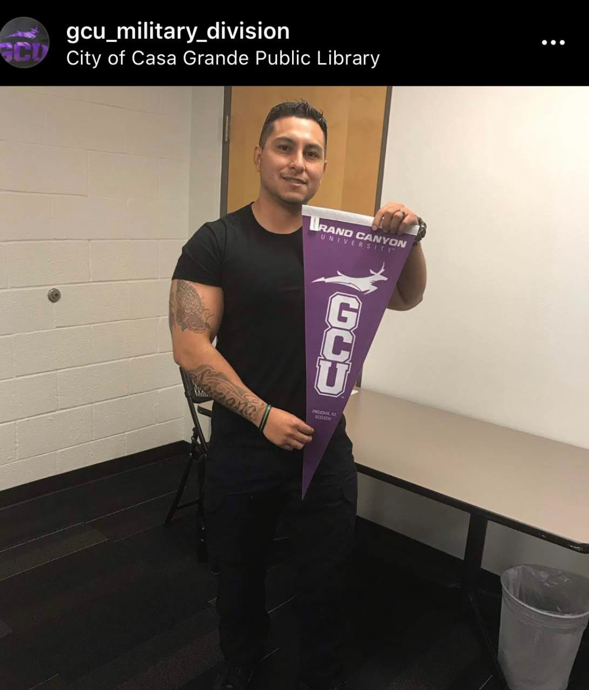

High School Graduation 2010
It took me 6 years to graduate High School because I had decided to drop out and be around the wrong
people.
When I found out my girlfriend at the
time was pregnant, I decided to go back to night school and graduate in one semester.

Children Births
My first child was born in May 2009 followed by her sister in January 2011.
Several years later their
brother was born in August 2017.



My 2 bonus children


Basic Training
I enlisted in the United States Army in 2011 at the age of 21.
I wanted to provide a better future for
my little family that I made.
I graduated from basic training in Aug. 2011.
I went to AIT (Advanced Individual Training) for 10
weeks after.
Once training was completed, my first duty station was
in South Korea for 1 year.

Married 2022
During covid-19, my unit was activated by the Governor of Arizona to help with the
crises.
I lead a 10 man team to cover down for St Vincent De Paul as they were no longer allowed to
receive volunteers to help with food banks due to lock down restrictions.
This is where I met my wife.
She was the volunteer coordinator, although we never spoke more than 20 words to each other for almost 6
months.
After we found out that we shared the same love for music and horror movies, we quickly became close.
We
married on October 31st 2022 By Wednesday Adams!

Going back to school
Going back to school I knew would be a challenge for me but I just knew that I
wanted to go but I didn't know what I wanted to study.
My first major that I had chose was B.S. in
Justice Studies.
I changed my major a few times until I found my passion for software development.
